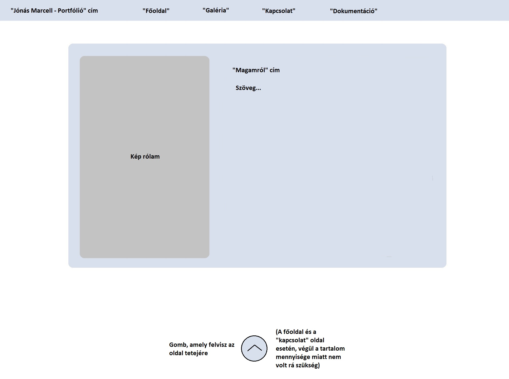

A portfólió tervezésénél mindenképpen egy letisztult, egyszerű ám
minőségi dizájnt képzeltem el, melyben az elemek színben,
formában és a szimmetriát tekintve összhangban vannak.
A hátteret olyannak szerettem volna beállítani, hogy
ne legyen zavaróan figyelemfelhívó, ám mégis kellemes hangulatot
nyújtson az oldalt megtekintőknek,
illetve persze illeszkedjen
a kék színspektrumhoz, amellyel dolgoztam.
A kód felépítését megelőzően a következő tervet készítettem paint-ben:

Nagyrészt sikerült hű maradnom hozzá, azonban akadtak néha problémák
és természetesen pár előre nem átgondolt dolog is olykor meglepetést okozott.
Második tervet már nem csináltam, valamint az összes aloldal alapvető
kinézete megegyezik, ezért csak egy kép ábrázolja az elképzelést,
mely a főoldalra vonatkozik.
Az ötleteket, melyek eszembe jutottak, megvalósítottam, a kisebb problémákat
megoldottam.
A nem várt dolgokkal tudás és idő szűkében kénytelen voltam
megbarátkozni, és egyszerűbb megoldáshoz folyamodni.
Ezek a következők:
| + | - |
|---|---|
| A menüsávban jelöltem az adott oldalon való tartózkodást. | A vertikálisan hosszú oldalakra (galéria, dokumentáció) sajnos nem tudtam berakni a válaszott háttérképet, hiszen ismétli önmagát lefelé. Ezekben az esetekben átmenetes háttérrel helyettesítettem. | A menü linkjeire extra animációt kódoltam. | A "Jónás Marcell - Portfólió" címet nem sikerült egyvonalba, balra tolva helyezni a menüsávban anélkül, hogy ne tolná el a linkeket, így végül kihagytam. |